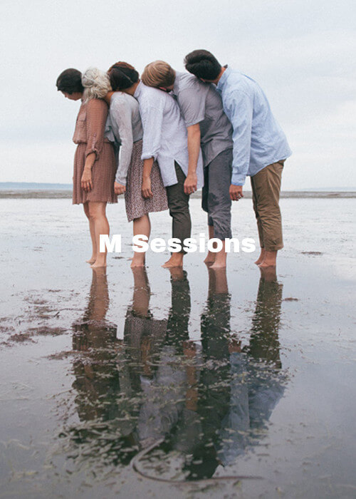
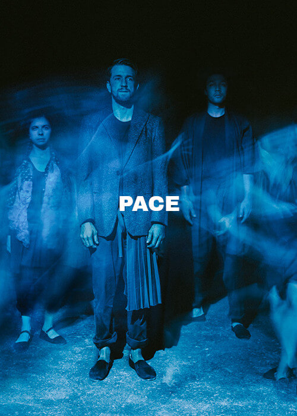
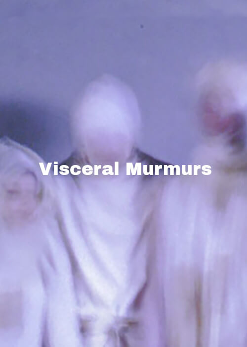
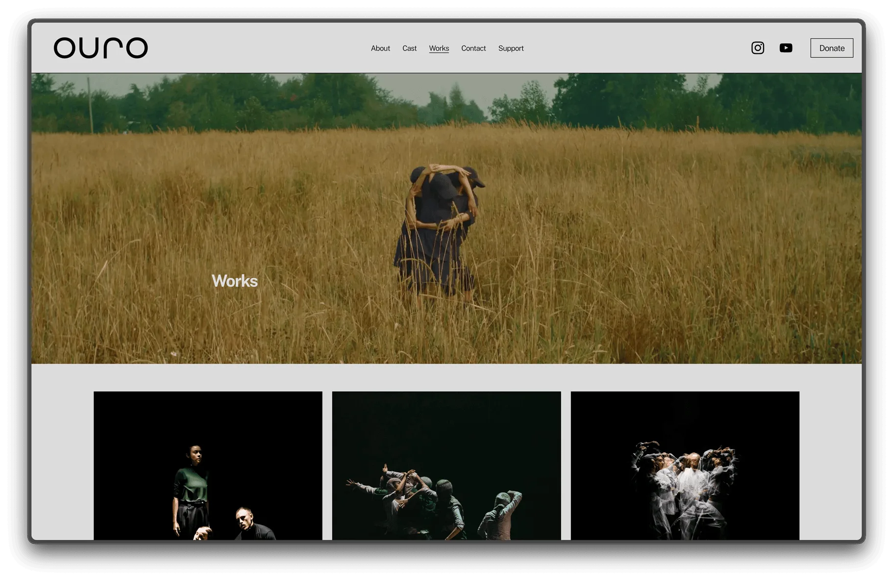

9 years of everything
Consolidated OURO Collective's WordPress site into a focused brand and web presence.
OURO Collective had been performing for nine years. The website had been touched by just as many hands. WordPress, multiple templates, no single direction. Show posters doubled as navigation. Pages existed for performances no one was looking for. Images ranged from professional photography to phone screenshots.
The company had the work. What they didn't have was a site that matched it.
The job wasn't redesigning a website. It was deciding what all of that looks like when you only keep what matters.
I started by pulling everything out of WordPress and sorting it: performances, photos, video, press, cast info. Then I cut. Low-resolution images went first. Redundant performance pages followed. What survived was the photography that showed the work and the six productions worth featuring.
The updated logo was already in hand. My job was to build a site that earned it.
Before / After
Old / New
The archive
Nine years of performances. Each had its own poster, its own page, its own visual language. The old site stacked them all.






Six posters from six different eras. No shared type, no shared palette, no shared grid. Each one made sense alone. Together they made noise.
The new site

Full-bleed photography replaces poster navigation. The updated wordmark sits top-left. Five pages, one layout. The work speaks; the site stays quiet.
- All of it reduced to one focused site.
- WordPress and its template mashup replaced with a clean, maintainable build.
- Low-res and irrelevant assets cut entirely.
- Photography leads instead of posters.
See it live at ourocollective.com.
The content was the problem
The old site didn't fail because it was ugly. It failed because nine years of accumulation had buried the work. The first job was editorial. The visual followed.
Someone else's logo, your layout
I didn't design the wordmark. I designed what lives around it. That's most client work: you inherit decisions and build a system that makes them feel intentional.
Inquire"We had years of content and no clear direction. Ash gathered what mattered, cut the rest, and it connected."
OURO Collective